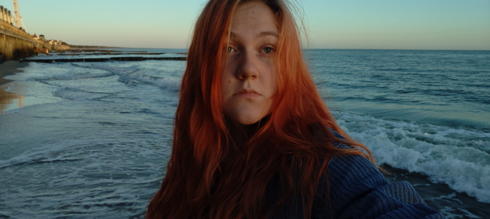

Обо мне

Привет! Меня зовут Даша, я учусь в Политехе. Этот сайт сделала в рамках учебной работы по веб-технологиям, чтобы коротко рассказать о себе.
Тут я что-то расскажу о себе, если и(или) когда-то придумаю.
Из интересного
Наверное, самое интересное в моей биографии — то, что я закончила ФМШ СФУ. Это физматшкола при Сибирском федеральном университете. Годы там были интересные и именно они привили мне любовь к математике.
А ещё я умею писать весёлые выступления про науку. Это не серьёзные доклады, а скорее стендап на научные темы: про физику и математику природных явлений, о которых можно не догадываться. Получается объяснять сложное простыми словами — и при этом шутить. Мне нравится, когда наука перестаёт быть скучной.
Иногда выступаю с этим перед знакомыми и на студенческих мероприятиях. Это хобби, которое хорошо разгружает голову после учёбы.
Увлечения
Раньше я вела телеграм-канал. Писала туда про учёбу, науку, иногда просто про жизнь. Получалось что-то среднее между дневником и маленьким блогом. Со временем забросила — учёба съела время, — но опыт остался. Я очень хочу вернуться к этому.
Кроме этого, люблю читать, гулять и просто отдыхать от шума. Иногда фотографирую то, что попадётся под руку. Ничего особенного, но мне нравится.
Учёба
Кратко о том, как шла моя учёба. Без лишних слов — просто факты.
| Год | Этап | Что было |
|---|---|---|
| до 2025 | ФМШ СФУ | Физматшкола, математика, физика |
| 2025 | Поступление | Политех, первый курс |
| 2025-2026 | 1–2 курс | Базовые предметы, сессии |
| 2026 | 2 курс | Курсовой проект, новые предметы |